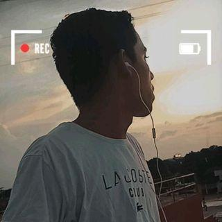

Jonh Wesley
Desenvolvedor Front-end no Programa Trilhas
Sou Jonh Wesley, atualmente estudante de Ciência da Computação, na área de Front End, sou de Bom Jardim (MA).
Meu foco é transformar ideias em interfaces reais e funcionais. Recentemente fiz uma pausa na área tech, pois não consegui atingir os objetivos desejados.
No entanto, o Trilhas Inova surgiu como o incentivo exato que eu precisava para voltar a codar com força total.